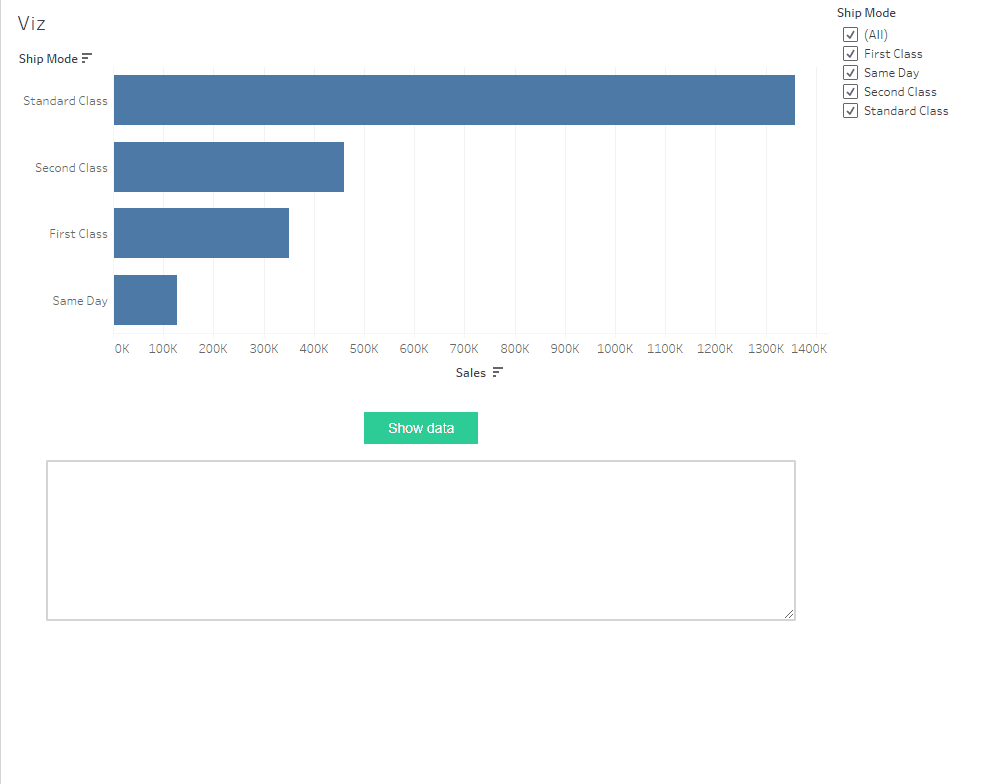

Getting summary / underlying data
Summary and underlying data can be retrieved as list of dicts from tableau dashboards using the get_underlying_records() and get_summary_records() methods of a Worksheet object.
from ._anvil_designer import MainTemplate
from anvil import *
from tableau_extension.api import get_dashboard
class Main(MainTemplate):
def __init__(self, **properties):
self.init_components(**properties)
self.dashboard = get_dashboard()
self.chart = self.dashboard.get_worksheet('Viz')
print(self.chart.get_underlying_records())
print(self.chart.get_summary_records())
def primary_button_1_click(self, **event_args):
"""This method is called when the button is clicked"""
print(self.chart.get_underlying_records()) # note that this is a lot of output
print(self.chart.get_summary_records())
self.text_area_1.text = self.chart.get_summary_records()
After reloading the extension and clicking the “Show data” button, you should see this output in the Anvil “Tableau” pane (screenshot of the Viz worksheet for reference).
# printed output from .get_underlying_records()
# and .get_summary_records()
[
...
{'Ship Mode': 'Second Class', 'Sales': 120.768},
{'Ship Mode': 'First Class', 'Sales': 25.92},
{'Ship Mode': 'First Class', 'Sales': 34.65000000000001},
...
]
[
{'Ship Mode': 'Same Day', 'SUM(Sales)': 128363.125},
{'Ship Mode': 'First Class', 'SUM(Sales)': 351428.4229000002},
{'Ship Mode': 'Second Class', 'SUM(Sales)': 459193.5693999998},
{'Ship Mode': 'Standard Class', 'SUM(Sales)': 1358215.742999983}
]
Note
Both get_underlying_records() and get_summary_records() return data with the filters applied to them.
This gif shows binding the result of get_summary_records() to the text property of a Text Area component

If you aren’t familiar with how to bind an Anvil component to a Tableau component, see Bind Anvil components to Tableau filters and parameters.
Click here to clone the Anvil App
And here for the Tableau workbook